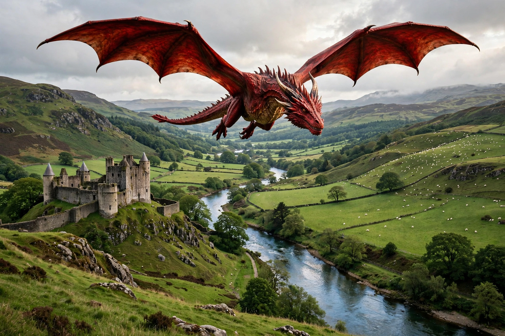

Welsh mythology
Welsh mythology consists of the folk traditions, tales, and beliefs of Wales, developed by the Celtic Britons and preserved in medieval Welsh manuscripts and oral tradition. Its most famous literary product is the Mabinogi — the Four Branches and associated tales — together with the poetry attributed to Taliesin and Aneirin, the Welsh Triads, and a rich Arthurian tradition in which King Arthur appears as a Welsh hero long before he became the chivalric king of European romance.

| Key texts | Mabinogi, Book of Taliesin, Welsh Triads |
|---|---|
| Manuscripts | White Book of Rhydderch, Red Book of Hergest |
| Major figures | Pwyll, Rhiannon, Brân the Blessed, Gwydion, Lleu |
| Otherworld | Annwn |
The Four Branches
The Four Branches of the Mabinogi interlace the fortunes of two great families: the house of Pwyll of Dyfed and his descendant Pryderi, and the children of Dôn in Gwynedd — Gwydion, Arianrhod, and their uncle Math. Themes of honour, shame, enchantment, and the calamitous misuse of magic run through the tales, which are set in a recognisably Welsh landscape of named hills, rivers, and courts.
Gods euhemerised
Unlike Irish mythology, where the Tuatha Dé Danann remain recognisably divine, the Welsh tales generally present their supernatural figures as kings, enchantresses, and heroes: Ceridwen the witch with her cauldron of inspiration, Llŷr and his children Branwen and Brân, and Manannán's Welsh counterpart Manawydan. Scholars have nonetheless identified older deities behind several figures, such as the horse-goddess Rhiannon (from *Rīgantonā, "great queen").
Arthurian and heroic tradition
Wales preserved the oldest stratum of the Arthurian legend: in Culhwch and Olwen Arthur leads a court of wonder-working warriors, and poems such as Preiddeu Annwfn send him raiding the Otherworld. The historical poems of the Book of Taliesin and Aneirin's Y Gododdin connect myth with the wars of the post-Roman Britons.
Folklore
Later Welsh folklore teems with the Tylwyth Teg ("Fair Family", the fairies), the spectral hounds Cŵn Annwn, lake maidens such as the Lady of Llyn y Fan Fach, and the prophetic red dragon of Dinas Emrys, which became the national emblem of Wales.
See also
References
- Bromwich, Rachel, Trioedd Ynys Prydein: The Triads of the Island of Britain, 2006.
- Gantz, Jeffrey (trans.), The Mabinogion, Penguin, 1976.
- MacKillop, James, Dictionary of Celtic Mythology, Oxford University Press, 1998.